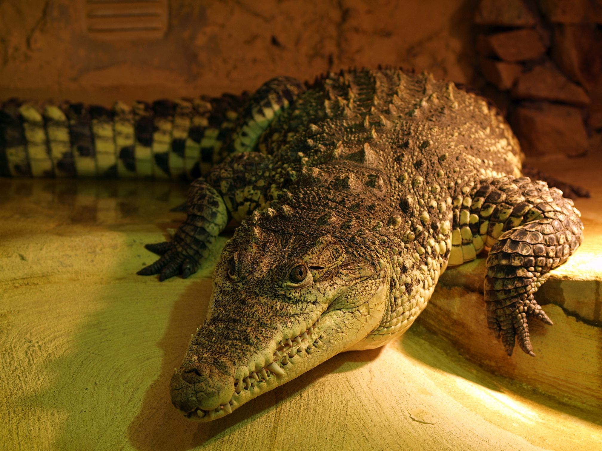

Zebra
krokodyl
Może osiągać długość 5,5 – 6,5 metra, masę blisko 1 tony. Grzbiet gada jest barwy zielono-brązowej, z ciemnymi plamkami, brzuch jasny, żółtawy. Posiada masywną czaszkę na której znajdują się dwa doły skroniowe. Krokodyle nilowe widzą dobrze zarówno w dzień jak i w nocy.